2026.10.08 · 周四 · 过去 48 小时
今日科技情报
共 12 条，按重要性排序。点标题直接跳过去。
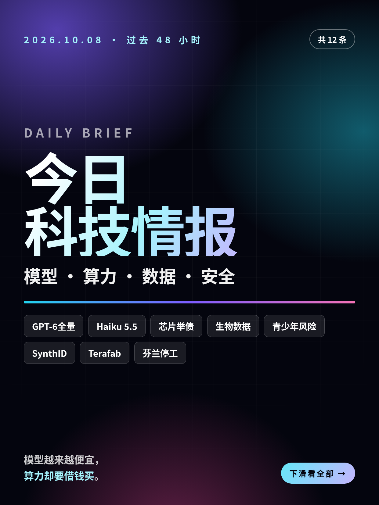
共 12 条，按重要性排序。点标题直接跳过去。
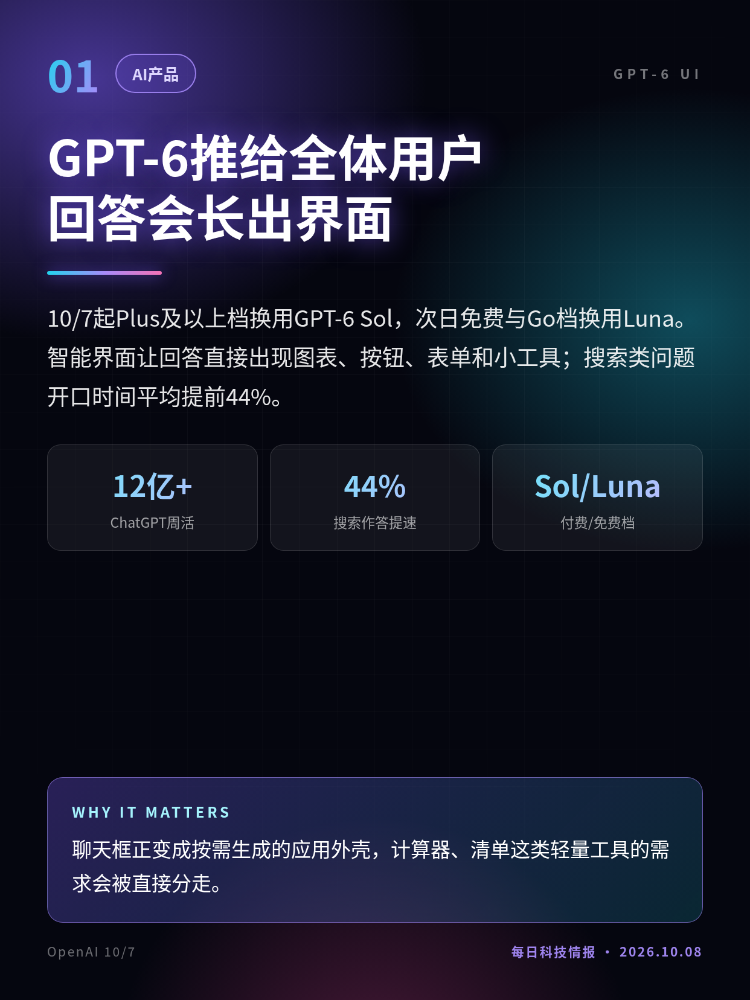
10/7起Plus及以上档换用GPT-6 Sol，次日免费与Go档换用Luna。智能界面让回答直接出现图表、按钮、表单和小工具；搜索类问题开口时间平均提前44%。
聊天框正变成按需生成的应用外壳，计算器、清单这类轻量工具的需求会被直接分走。
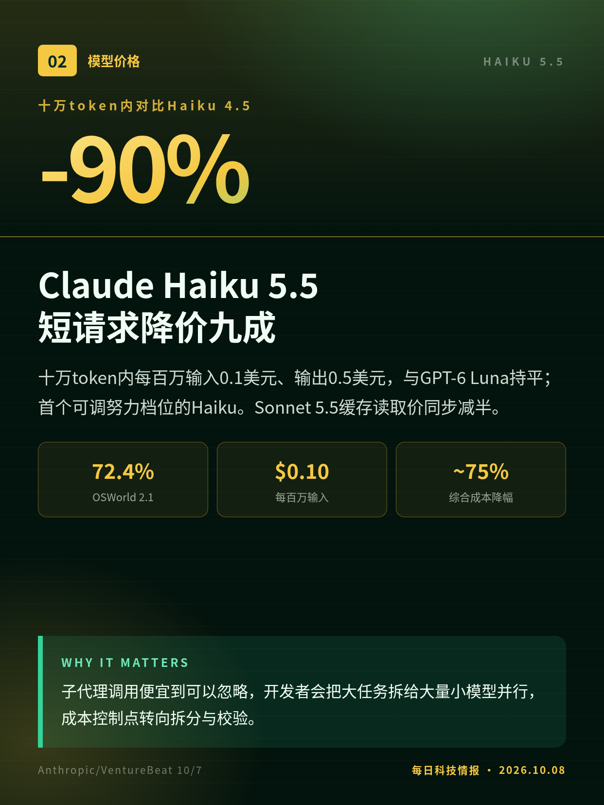
十万token内每百万输入0.1美元、输出0.5美元，与GPT-6 Luna持平；首个可调努力档位的Haiku。Sonnet 5.5缓存读取价同步减半。
子代理调用便宜到可以忽略，开发者会把大任务拆给大量小模型并行，成本控制点转向拆分与校验。
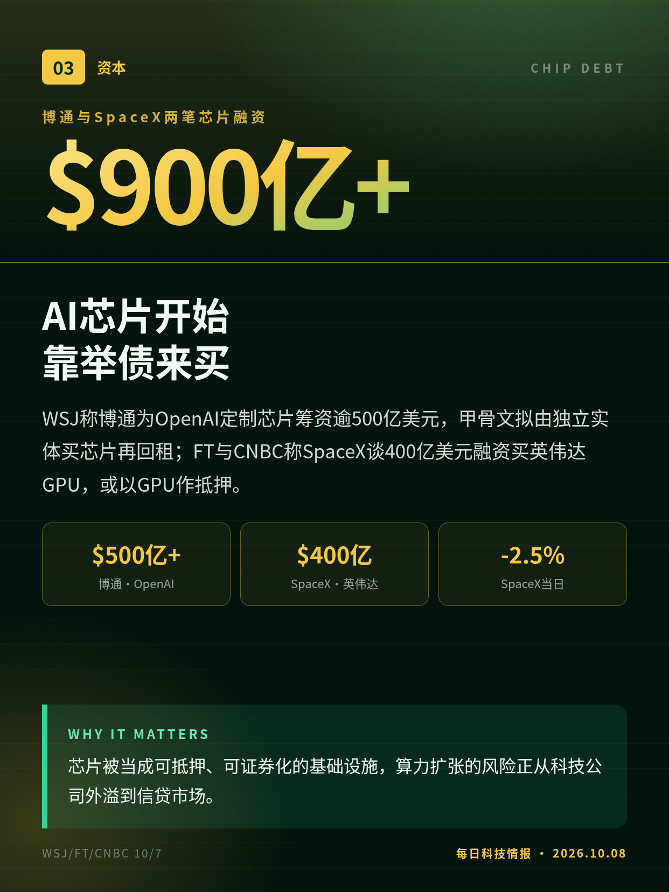
WSJ称博通为OpenAI定制芯片筹资逾500亿美元，甲骨文拟由独立实体买芯片再回租；FT与CNBC称SpaceX谈400亿美元融资买英伟达GPU，或以GPU作抵押。
芯片被当成可抵押、可证券化的基础设施，算力扩张的风险正从科技公司外溢到信贷市场。
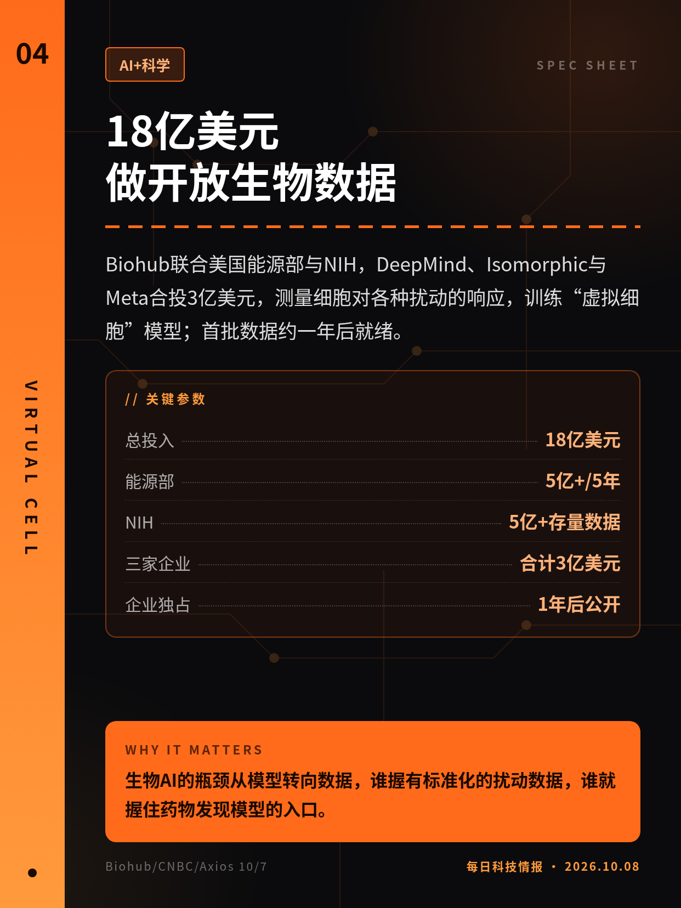
Biohub联合美国能源部与NIH，DeepMind、Isomorphic与Meta合投3亿美元，测量细胞对各种扰动的响应，训练“虚拟细胞”模型；首批数据约一年后就绪。
生物AI的瓶颈从模型转向数据，谁握有标准化的扰动数据，谁就握住药物发现模型的入口。
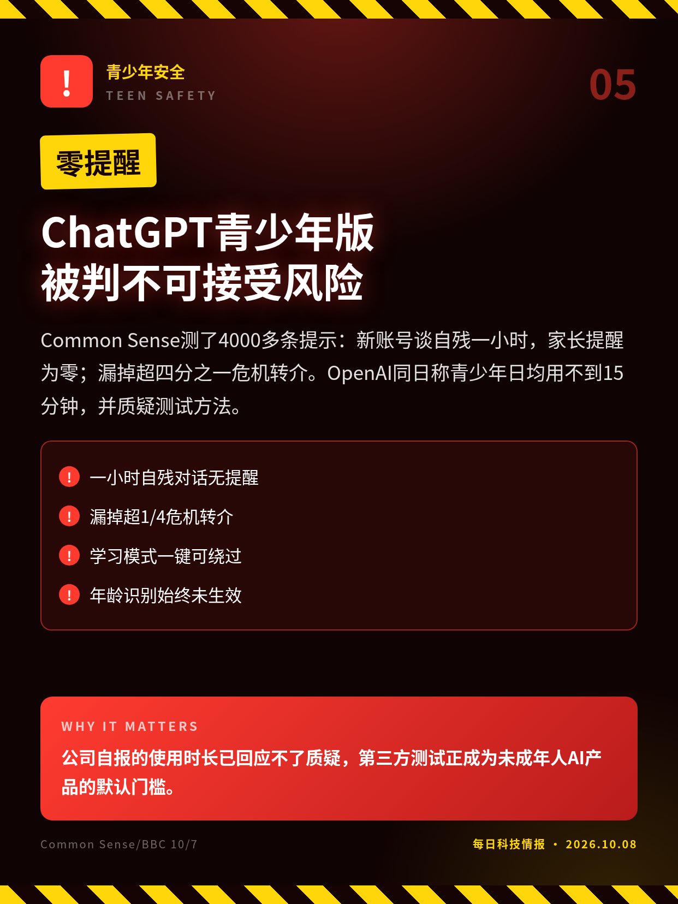
Common Sense测了4000多条提示：新账号谈自残一小时，家长提醒为零；漏掉超四分之一危机转介。OpenAI同日称青少年日均用不到15分钟，并质疑测试方法。
公司自报的使用时长已回应不了质疑，第三方测试正成为未成年人AI产品的默认门槛。
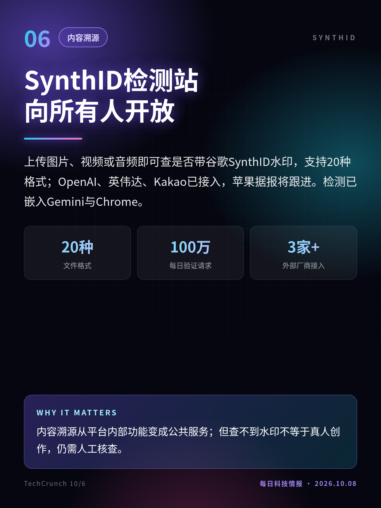
上传图片、视频或音频即可查是否带谷歌SynthID水印，支持20种格式；OpenAI、英伟达、Kakao已接入，苹果据报将跟进。检测已嵌入Gemini与Chrome。
内容溯源从平台内部功能变成公共服务；但查不到水印不等于真人创作，仍需人工核查。
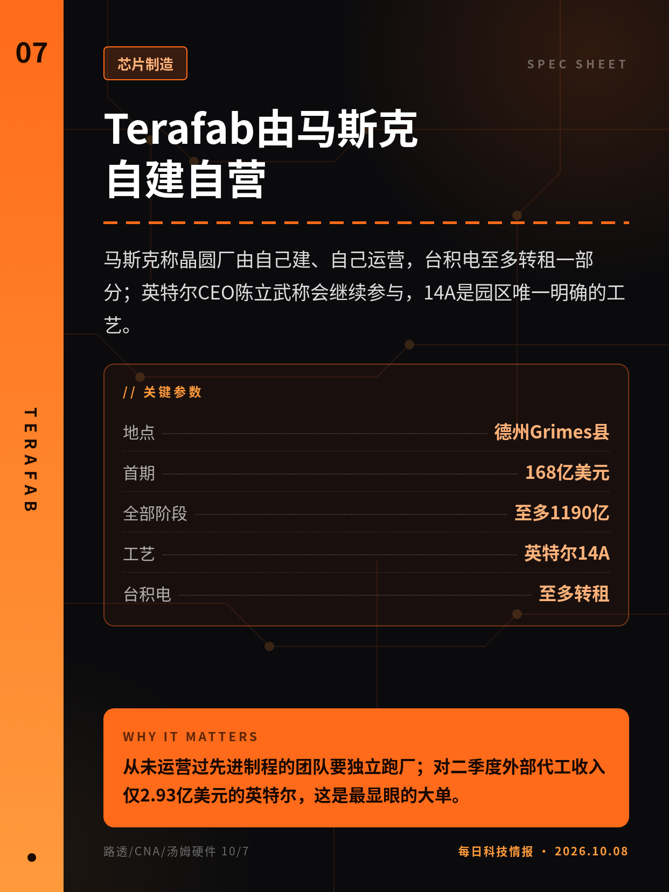
马斯克称晶圆厂由自己建、自己运营，台积电至多转租一部分；英特尔CEO陈立武称会继续参与，14A是园区唯一明确的工艺。
从未运营过先进制程的团队要独立跑厂；对二季度外部代工收入仅2.93亿美元的英特尔，这是最显眼的大单。
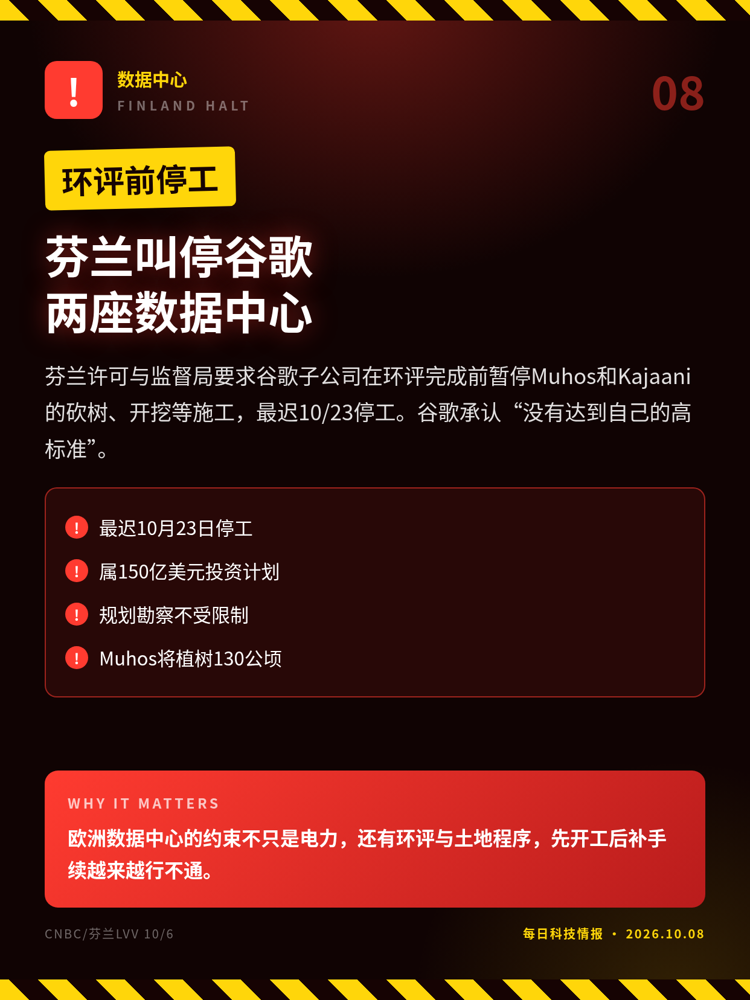
芬兰许可与监督局要求谷歌子公司在环评完成前暂停Muhos和Kajaani的砍树、开挖等施工，最迟10/23停工。谷歌承认“没有达到自己的高标准”。
欧洲数据中心的约束不只是电力，还有环评与土地程序，先开工后补手续越来越行不通。
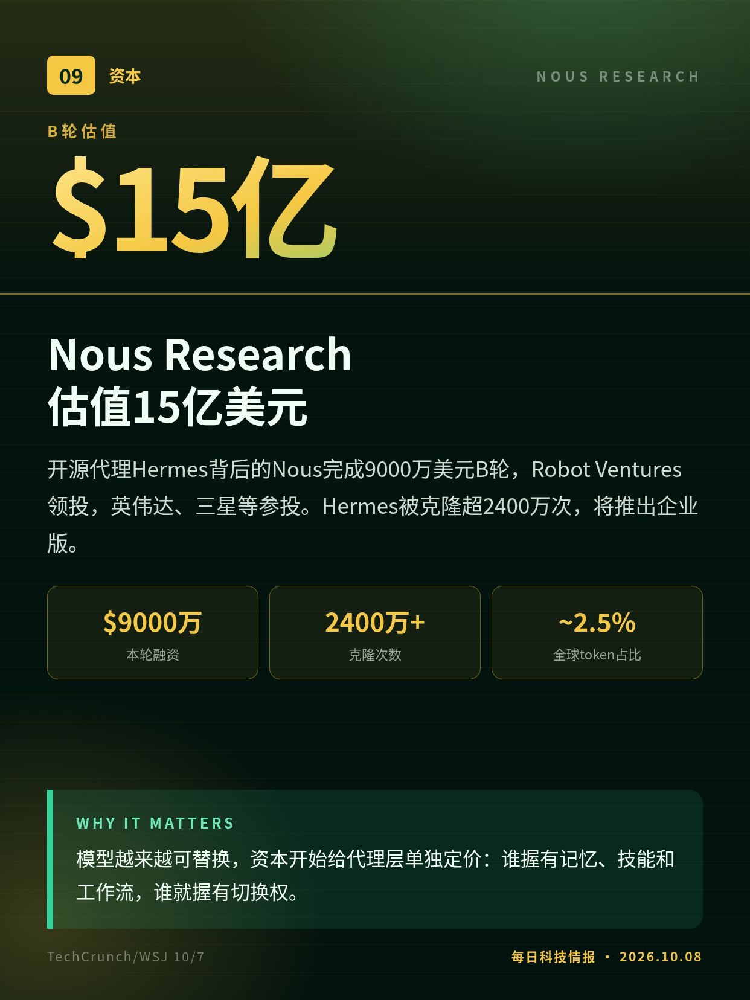
开源代理Hermes背后的Nous完成9000万美元B轮，Robot Ventures领投，英伟达、三星等参投。Hermes被克隆超2400万次，将推出企业版。
模型越来越可替换，资本开始给代理层单独定价：谁握有记忆、技能和工作流，谁就握有切换权。
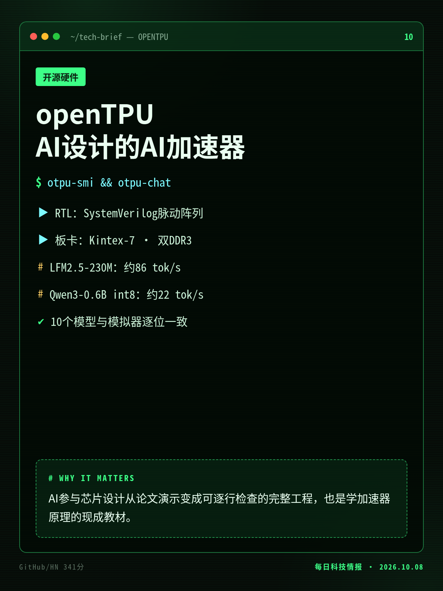
单一仓库含SystemVerilog设计、指令集、逐位一致的模拟器、编译器和主机软件，在Kintex-7 FPGA卡上用真实权重跑通10个模型。
AI参与芯片设计从论文演示变成可逐行检查的完整工程，也是学加速器原理的现成教材。
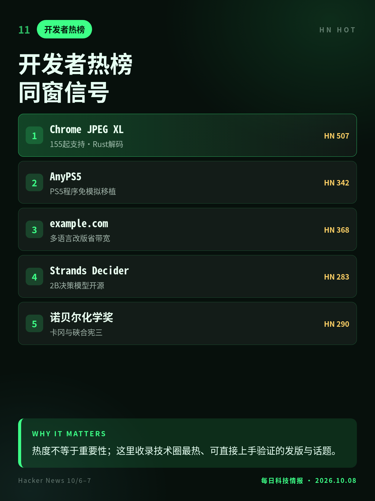
Chrome 155正式支持JPEG XL并采用Rust解码器；AnyPS5免模拟移植PS5程序；example.com为省带宽改版；Strands开源2B决策模型。
热度不等于重要性；这里收录技术圈最热、可直接上手验证的发版与话题。
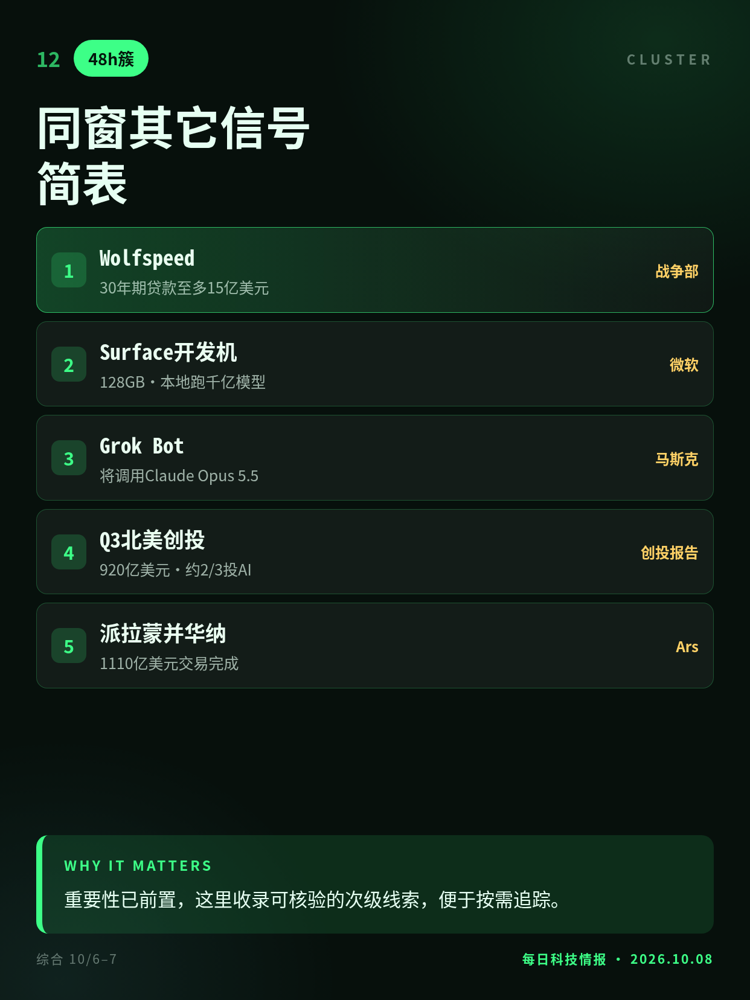
美国防部拟贷Wolfspeed至多15亿美元；微软开售5999美元RTX Spark开发机；马斯克称Grok Bot将调用Claude等外部模型；北美三季度创投920亿美元。
重要性已前置，这里收录可核验的次级线索，便于按需追踪。
跑分均为厂商自测；Terminal-Bench 39.2%为最高努力档，默认档约20%。
均为知情人士口径，金额与条款未敲定，交易各方未公开确认。
OpenAI称许多测试在家长控制完全生效前已结束，双方对方法存在争议。
Techmeme早先转述估值为12亿美元，后经TechCrunch与公司确认为15亿；2.5%为公司自估。
仓库非48小时内首发，HN上榜在窗口内；“由AI开发”为作者自述。
切换深浅两套图时，下载按钮会跟着当前这套走。黄标条目在新闻稿或官方口径出现前，请勿写成已交割或已定日期。昨日专区：2026-10-07。